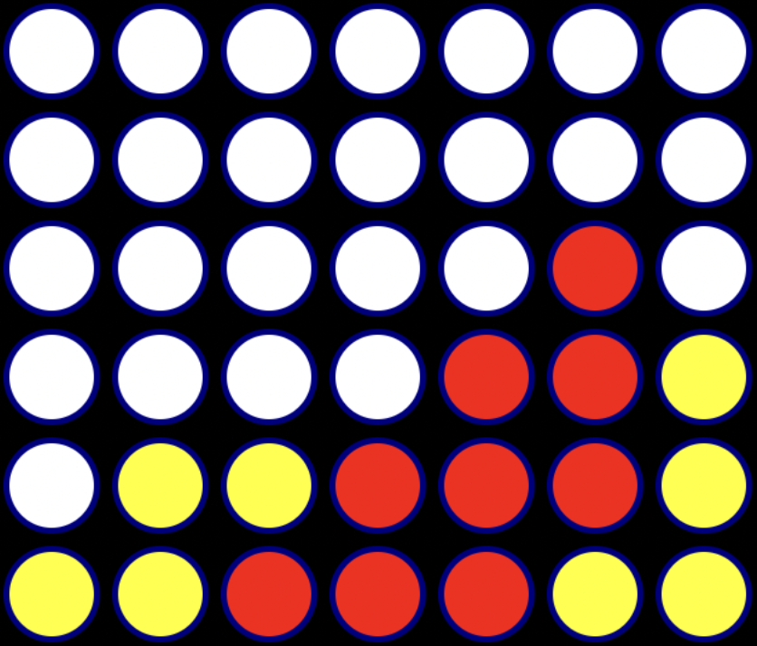

Reinforcement learning · From scratch
AlphaZero from Scratch
A concise implementation of AlphaZero and Monte Carlo Tree Search for learning, experimenting, and comparing agents in Tic-Tac-Toe and Connect Four.

The goal
AlphaZero combines planning with a learned policy and value model, but understanding the interaction between those pieces can be difficult in a large environment. This project reduces the algorithm to a small, readable system built around familiar board games.
Experiment design
The framework makes it easy to choose a game, configure two agents, and run a repeatable tournament.
- Play as or compare random, human, MCTS, and AlphaZero agents.
- Switch between Tic-Tac-Toe and Connect Four.
- Configure self-play training separately from evaluation.
- Inspect individual games or aggregate wins and draws across a tournament.
Result
In the repository’s documented Connect Four evaluation, the trained AlphaZero agent wins all ten rounds against the configured MCTS agent. More importantly, the compact setup makes the full loop—from search and self-play to training and evaluation—easy to trace and modify.